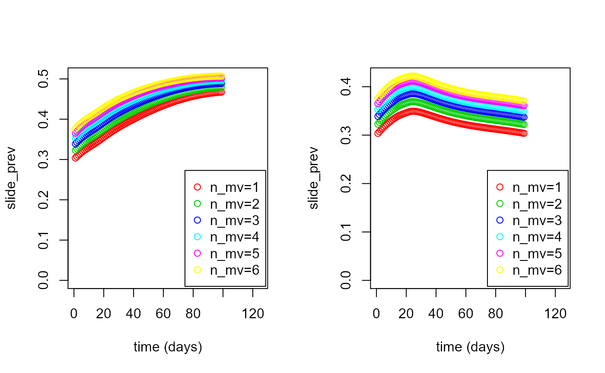

D_worked_example02.RmdThis is an example of how to load a dataset and carry out simulations of the progression of malaria in the main (non-cohort) population.
First load the package (install it first if necessary as shown in the Installation article:
library(vectorpower)Next create the list of input file locations to supply to the mainpop() function. Here the files are located online, so the list is created manually:
input_files <- list(
param_file=url("https://raw.githubusercontent.com/KeithJF82/vectorpower/master/inst/extdata/DemoFolder1/model_parameters.txt"),
age_file=url("https://raw.githubusercontent.com/KeithJF82/vectorpower/master/inst/extdata/DemoFolder1/age_data.txt"),
het_file=url("https://raw.githubusercontent.com/KeithJF82/vectorpower/master/inst/extdata/DemoFolder1/het_data.txt"),
start_file=url("https://raw.githubusercontent.com/KeithJF82/vectorpower/master/inst/extdata/DemoFolder1/start_data.txt"),
annual_file=url("https://raw.githubusercontent.com/KeithJF82/vectorpower/master/inst/extdata/DemoFolder1/annual_data.txt")
)If using a dataset folder created using dataset_create(), this can be done automatically by using the load_dataset() function. Here the example folder in the inst/extdata subfolder, created in the first worked example, is used:
dataset_folder=system.file("extdata/DemoFolder1/",package="vectorpower")
input_files <- load_dataset(dataset_folder)The parameters defining the trial setup are then supplied to be used by mainpop():
# Length of time to run main population model from starting date before intervention begins
start_interval = 0.0
# Time points after the end of the starting interval at which benchmark data should be output
time_values = c(1:100)
# List of sets of values to load from starting data
n_mv_set = c(1:6)
# Intervention parameter given variable value (0 = None, 1 = ATSB mortality, 2 = bednet coverage, 3 = Interior residual spraying coverage, 4 = SET coverage)
int_v_varied = 1
# List of intervention parameter values ()
int_values = c(0.0,0.1) The parameters and list of input files are passed to the load_inputs function, which creates a set of data for input.
input_data <- load_inputs(input_files=input_files, n_mv_set=n_mv_set)The input data set and the other trial parameters are then passed to the mainpop() function, which runs the deterministic continuum malaria model, the code for which is found in mainpop.cpp in the src/ folder.
mainpop_data <- mainpop(input_data = input_data, int_v_varied = int_v_varied,
int_values=int_values, start_interval = start_interval, time_values=time_values)
#>
#> Run 1 Mosquito density=12.21 Intervention number=0 dt=0.0286182
#> Intervention begun. ATSB kill rate=0
#> Run 1 complete. dt=0.0286182
#>
#> Run 2 Mosquito density=12.21 Intervention number=1 dt=0.0286182
#> Intervention begun. ATSB kill rate=0.1
#> Run 2 complete. dt=0.0286182
#>
#> Run 3 Mosquito density=14.55 Intervention number=0 dt=0.0262161
#> Intervention begun. ATSB kill rate=0
#> Run 3 complete. dt=0.0262161
#>
#> Run 4 Mosquito density=14.55 Intervention number=1 dt=0.0262161
#> Intervention begun. ATSB kill rate=0.1
#> Run 4 complete. dt=0.0262161
#>
#> Run 5 Mosquito density=16.9 Intervention number=0 dt=0.0243252
#> Intervention begun. ATSB kill rate=0
#> Run 5 complete. dt=0.0243252
#>
#> Run 6 Mosquito density=16.9 Intervention number=1 dt=0.0243252
#> Intervention begun. ATSB kill rate=0.1
#> Run 6 complete. dt=0.0243252
#>
#> Run 7 Mosquito density=19.25 Intervention number=0 dt=0.0227921
#> Intervention begun. ATSB kill rate=0
#> Run 7 complete. dt=0.0227921
#>
#> Run 8 Mosquito density=19.25 Intervention number=1 dt=0.0227921
#> Intervention begun. ATSB kill rate=0.1
#> Run 8 complete. dt=0.0227921
#>
#> Run 9 Mosquito density=21.6 Intervention number=0 dt=0.0215166
#> Intervention begun. ATSB kill rate=0
#> Run 9 complete. dt=0.0215166
#>
#> Run 10 Mosquito density=21.6 Intervention number=1 dt=0.0215166
#> Intervention begun. ATSB kill rate=0.1
#> Run 10 complete. dt=0.0215166
#>
#> Run 11 Mosquito density=23.95 Intervention number=0 dt=0.0204337
#> Intervention begun. ATSB kill rate=0
#> Run 11 complete. dt=0.0204337
#>
#> Run 12 Mosquito density=23.95 Intervention number=1 dt=0.0204337
#> Intervention begun. ATSB kill rate=0.1
#> Run 12 complete. dt=0.0204337
#>
#> Computations complete.The resulting data can be used in cohort calculations or processed on its own. It can be saved to a file so that it can be used again if R is closed.
saveRDS(mainpop_data,file="mainpop_data.Rds")The get_mainpop_data() function can be used to obtain selected results, which can then be plotted as graphs using the plot_mainpop_data() function:
plot1 <- get_mainpop_data(input_list=mainpop_data,set_n_mv=c(1:6),set_n_int=1,benchmark="slide_prev",age_start=0.0,age_end = 65.0)
plot2 <- get_mainpop_data(input_list=mainpop_data,set_n_mv=c(1:6),set_n_int=2,benchmark="slide_prev",age_start=0.0,age_end = 65.0)
par(mfrow=c(1,2))
plot_mainpop_data(plot1)
plot_mainpop_data(plot2)
For the creation of cohort data from main population data, see Worked Example 3.